高野山奥の院（2）/和歌山県高野町
奥の院の墓地も奥まってくるとロケットやテトラポットのようなナメた物件が少なくなってきて、鬱蒼とした杉林の中に苔むした大名墓や何時の時代のものか判らないような古い墓地が多くなってくる。
もともと高野聖の勧進で里の人間が遺骨とは別に遺髪や遺骨の一部を分骨したのが高野山の墓地の始めである。
先日訪れた山寺などにもそのような風習があった。このような山中他界観というのは東西を問わずあったのだろうか。
と、とんでもない物件を発見。
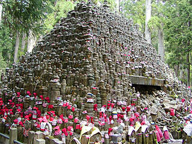
ピラミッド状の無縁塚である。
ここは古くから墓地があったため新しい墓地を造ろうとすると地中から無縁となった石塔が出てくることが多いそうだ。
そのような無縁の石塔を一ケ所に集めたのがこの無縁ピラミッドなのだ。高さは5メートル位だろうか。
ただでさえ壮絶な眺めなのだが、下の方の手の届くところには頭巾やヨダレかけが掛けられている。
っと・・・チョット待った！
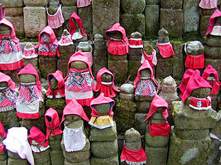
これは五輪塔じゃあないですか！
地蔵に頭巾やヨダレかけ、なら判るが何故五輪塔に？
良く見れば五輪塔も人の形に見えなくもないがやっぱり無茶があるような気がするんですけど・・・
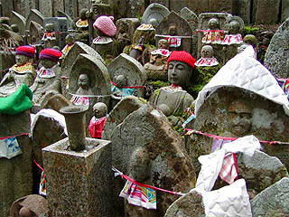
地蔵の方は五輪塔とは別にちゃあんと帽子やヨダレかけが掛けられていました。
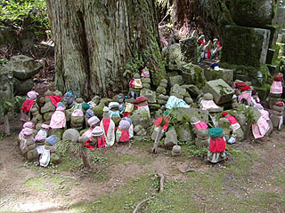 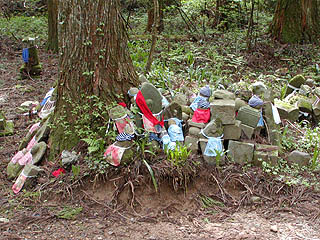
五輪ピラミッドに納まりきらなかったのだろうか？あちこちの木の根元には掘り上げられた無縁の地蔵や石塔がまとめられていた。
やはり五輪塔にも帽子や頭巾、ヨダレかけが装着されており、心ある人が供養しているようだ。
いかにもぞんざいに積んである様子とカラフルなヨダレかけがアンバランスだがそのアンバランスさがひっそりとした墓地の中で強烈な印象を与えてくれる。
そんなこんなで墓地のエリアも終わりいよいよ奥の院最終ステージに近付いてきた。
ボスキャラは勿論、弘法大師の廟である奥の院御廟だ。
奥の院御廟や灯籠堂といった奥の院の最重要施設があるエリアと墓地エリアとの間には玉川という用水のような小さな川が流れていて此岸と彼岸が明確に別けられている。御廟橋という橋の向こうは超神聖な場所だから勿論、写真撮影などもってのほかなのである。
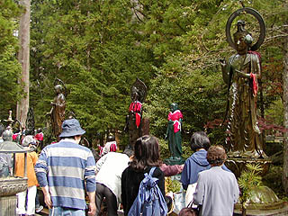
玉川沿いにあった水掛け地蔵＆観音。何体も並んでいたがどれも水を掛ける人達で一杯だった。
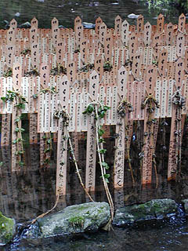 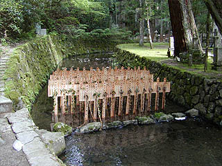
御廟橋の脇にあった水中の塔婆。流灌頂という供養形態だそうだ。
塔婆の大きさはさして大きくなく薄いものなのだが、流れる水に抗うように立っている塔婆の群れかなりインパクトがあった。
まるで故人の供養の為に必死に耐えているようだ。故人の供養を川で行うというのは珍しいように思う。
通常、死者の供養の舞台といえばここ高野山のような山中とか海と相場が決まっている。
ただシチュエーションとしては水に流されて行くというイメージは故人供養の場としてはハマっているとは思うが。
橋を渡り灯籠堂へ。
ここは天井から無数の灯籠が下がっているお堂だが建物はコンクリートで灯籠も電球仕込みのものなので雰囲気としてはイマイチだった。
灯籠が天井一杯に吊るされた地下通路のような所があったがそこも墓地や潅頂会や五輪ピラミッドの強烈なインパクトに比べると整い過ぎている感がある。
そして聖地高野山で最も神聖なる地点である御廟には多くの人々が参拝していた。
廟自体はとりたてて豪華だったり、50メートルの弘法大師像があったりする訳ではないのだがそこで拝んでいる人々の姿に、普段不真面目な態度＆気持ちで参拝している私も思わずちょっとココロ打たれちゃいました。そりゃあもう、みんな真剣そのものだったんですから。
その真剣な表情を見て、やっぱり弘法大師ってスーパースターなんだなあーと思う。
こりゃあ、追っかけは四国辺りまで追っかけていくわなあ。
帰りは公園墓地と平行した旧い参道を歩いて戻る。
こちらは公園墓地とは違って鬱蒼とした杉の古木の合間にかなり古い墓地が並んでいる。
織田信長から明智光秀まで、およそ思い浮かぶ歴史上著名な戦国大名の墓はほとんどあるといってよい。
こちらは撮影禁止ではなかったがあまり面白くなかったので写真は割愛します。いや、そりゃあ物凄く立派な墓だったんですよ。ただ私の琴線に触れなかったというだけで。
どちらかというとこういった仏像の方が琴線触れまくり。
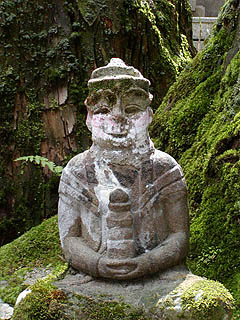 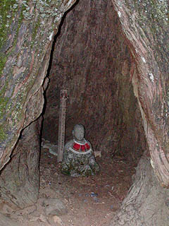
コンクリで顔を補修してある眉毛が素敵すぎる石像と木のウロの中に納まっていたお地蔵さん。
で、大名の墓が並ぶ参道だが所々にはやっぱり企業や団体の慰霊碑や墓が点在している。
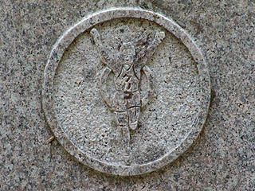 ←あの会社の墓です。
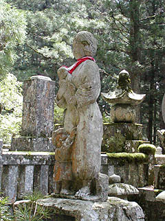 ←何とか婦人クラブとかなんとかの母子像
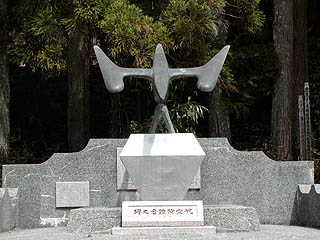 ←航空殉職者の墓
会社の墓だけでなく色々な団体の墓があるものだ。○○部隊慰霊碑とか○○町老人クラブ供養塔とか。
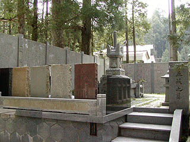
これは五族之墓。
五族とは、日・朝・満・蒙・漢民族のことで満州国建設の際スローガンとして五族みんなで協力して王道楽土を造りましょうということだそうです（参考文献；ゴルゴ13）。五族を象徴する5色の墓碑。
気になるのが墓地が新しい事。これが戦時中のもの、もしくは戦後すぐのものなら判るのだが、何故この平成の御時世に？
2本の参道が合流する所にある灯籠、というか六地蔵塔。
渋い参道にあってかなりファンキーな仕上がり。
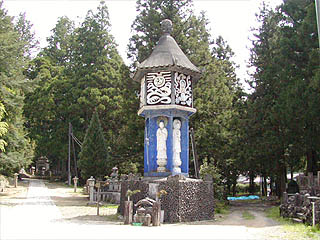
コンクリート造の青いペイントがナイスだ。
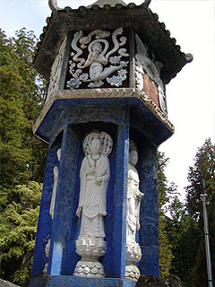 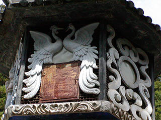
灯籠の灯袋の部分のレリーフなどは良く出来た造りだ。
これで高野山奥の院ツアーはお終い。聖俗入り乱れての混沌具合をお伝えしたかったが、これだけ見ちゃうと俗なトコロばっかでしたね。
ホントはも少し神聖なところなんですよ〜。
この後、もう一つかなりイイ感じの成福院という寺に寄ってみた。
おしまい
＃149成福院を御覧の方はこちらへどうぞ
2003.5.
珍寺大道場 HOME